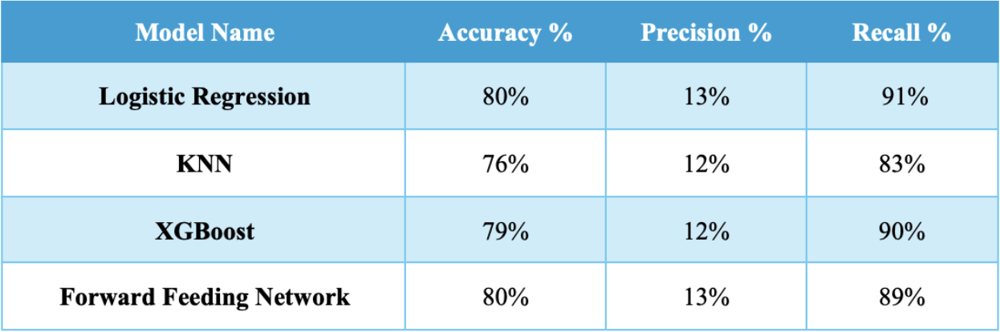
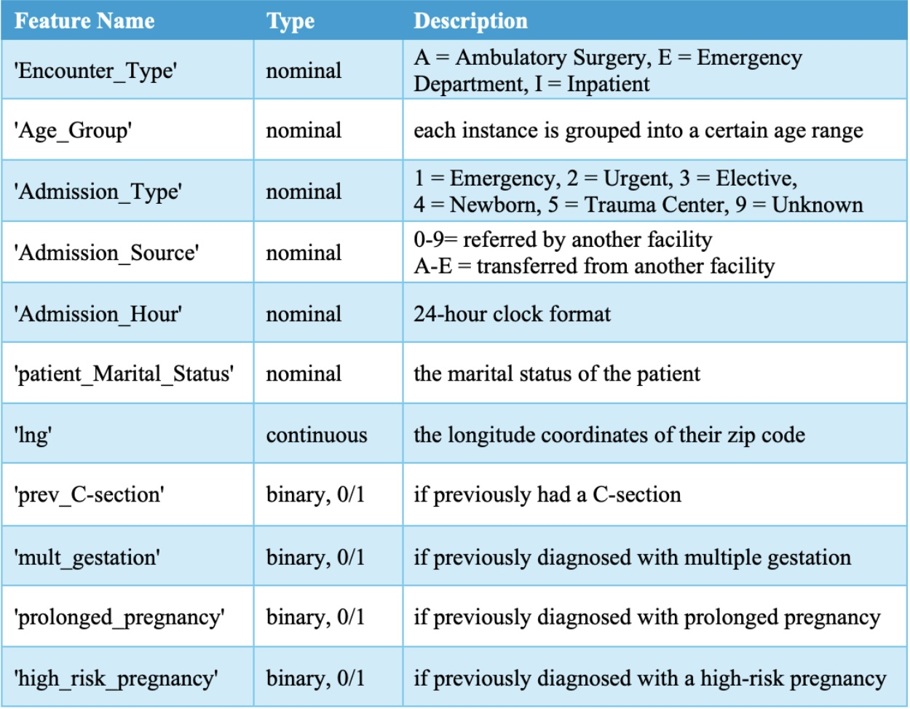
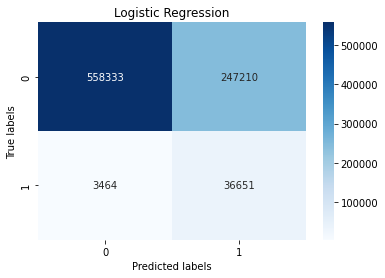
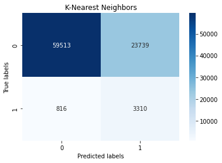

This project is a Linear Regression model and KNN model trained on ER patients records and demographics. It predicts whether or not a patient walking in to the ER is there for maternal complications.
Tools used: Python, Pandas, Numpy, Sklearn, Matplotlib, Seaborn
Models: KNN, Logistic Regression, XGBoost, Neural Net (I worked on KNN and Logistic Regression)
1. To predict whether or not a patient walking in to the ER is there for maternal complications.
2. To determine the most important features that contribute to maternal complications.
Below displays the accuracy metrics we found after training iterations of each different model:
These were the most important features we found for our models in predicting maternal health complications:
Below are confusion matrices; the recall accuracy is much higher than the precision.  
1. Other models could be tried and might bring better accuracy.
2. Reducing false negatives would greatly increase overall accuracy and usefulness.